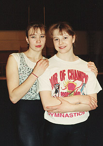

Olesia Dudnik (USSR)
1989 World V Champion
1989 European B
Champion
|

Dudnik with Boginskaya in early 1990.
Medal Total
- World Championships: 2 Gold, 1 Silver
- European Championships: 1 Gold
|
Olessia was born on August
15, 1974 in Zaporozhie, Ukraine. She trained at Dynamo Kirovograd with
Eduard Nechai (who coached 1978 American Cup champion Natalia Tereschenko).
She's currently coaching in Egypt.
Competition Results
- 1988
- Junior Friendship Tournament (Druzhba): 1st Team, 2nd
AA, 1st B, 1st FX, 2nd UB
- Jr. USSR-GDR Dual Meet: 1st Team, 4th AA
- II All-Union Summer Games for Youth: 1st AA
-
- 1989
- American Cup: 2nd AA
- European Championships: 6th AA. 1st B
- International Mixed Pairs: 2nd Team
- USSR Championships: 1st Team, 2nd AA
- World Championships: 1st Team, 1st V, 2nd B,
4th FX
-
- 1990
- French International: 1st B
USSR Championships: 2nd Team, 7th AA
This page was last updated on January 03,
2007.
© Gymn Forum